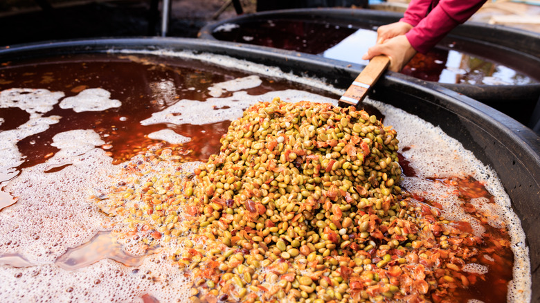

En un coup d'œil :
Process où on trempe du café déjà fermenté/séché dans un liquide aromatique (jus de fruits, infusion florale, sirop, distillat). Pas de fermentation biologique, juste absorption superficielle d'arômes. Résultat : profils intenses mais non métabolisés, souvent perçus comme artificiels. C'est le café "parfumé"et controversé.
Comprendre : Le parfumage sans transformation
Le principe de l'infusion aromatique
Définition technique :
On place du café déjà fermenté et séché (en parche ou même en grain vert) dans un bain aromatique pendant 12–48h, puis on sèche à nouveau.
Ce qui se passe :
•Absorption physique : le liquide pénètre dans les pores du grain/parche
•Aucune fermentation : pas d'activité microbienne (café déjà stabilisé)
•Aucune transformation : les molécules du liquide restent identiques (pas métabolisées)
C'est exactement comme tremper une éponge dans du parfum : l'éponge sent le parfum, mais rien n'a été transformé.
Infusion vs Co-fermentation : La différence éthique
| Critère | Co-fermentation | Infusion aromatique |
|---|---|---|
| Moment | Pendant fermentation active | Après fermentation (café sec/parche) |
| Activité biologique | Oui (levures/bactéries actives) | Non (café stabilisé, mort biologique) |
| Transformation | Oui (métabolisme, nouvelles molécules) | Non (arômes plaqués, identiques) |
| Résultat | Arômes intégrés, complexes | Arômes superficiels, artificial |
| Légitimité SCA | ✅ Autorisé en compétition | ❌ Interdit (adultération) |
| Éthique | Innovation légitime | Zone grise / tricherie |
En clair : Co-fermentation = création biologique. Infusion = copier-coller aromatique.
Pourquoi ce process existe (et pourquoi il est controversé)
Raisons commerciales :
•Rapidité : Pas besoin de gérer une fermentation complexe (48–96h), juste tremper 12–24h
•Contrôle absolu : Arômes prévisibles, pas de risque microbien
•Coût réduit : Pas besoin de fruits frais, juste extraits/jus/sirops
•Intensité garantie : Profil très marqué, "wow factor" immédiat
Problèmes éthiques :
❌ Tromperie du consommateur : Le profil ne vient PAS du terroir/variété/fermentation, mais d'un ajout externe
❌ Instabilité aromatique : Les arômes s'évaporent rapidement (3–6 mois), le café "perd" son parfum
❌ Masquage défauts : On peut cacher un café de qualité médiocre sous des arômes intenses
❌ Déséquilibre sensoriel : Notes souvent "artificial", pas intégrées
Position de l'industrie :
•SCA : ❌ Interdit en compétition (WBC, WBrC, etc.)
•Certifications (Organic, Fair Trade) : ❌ Généralement interdit
•Commerce : Zone grise, légal mais éthiquement contesté
Maîtriser : Le protocole technique
Phase 1 : Sélection du café de base
Objectif : Café déjà fermenté et séché en parche (ou grain vert)
Qualité recommandée :
•Score 80–84 pts (qualité correcte mais pas premium)
•Profil neutre de préférence (semi-lavé, lavé simple)
•⚠️ Éviter cafés exceptionnels (92+ pts) → c'est du gaspillage
Pourquoi ça fonctionne mieux sur café moyen :
•Pas de profil fort à masquer
•Prix d'achat plus bas → ROI meilleur
•Transformation "magique" (80 pts → perception 86+ pts)
Phase 2 : Préparation du liquide d'infusion
Option A : Jus de fruits frais
Méthode :
•Sélectionner fruits mûrs (ananas, mangue, fruits rouges, passion)
•Presser/mixer pour extraire jus
•Filtrer (retirer pulpe/fibres)
•Diluer si trop concentré (ratio 1:1 jus/eau)
Ratio liquide/café : 1:1 à 2:1 (ex: 10L jus pour 10 kg café parche)
Option B : Infusion florale
Méthode :
•Préparer infusion concentrée (50–100g fleurs séchées pour 10L eau chaude)
•Infuser 30–60 min
•Filtrer et refroidir à 15–20°C
•Utiliser dans les 24h (instabilité aromatique)
Fleurs utilisables : Jasmin, lavande, rose, hibiscus, fleur d'oranger
Option C : Sirops / Extraits (le plus controversé)
Méthode :
•Acheter sirops aromatiques (vanille, caramel, fruits)
•Diluer dans eau (ratio 1:5 à 1:10)
•Ajuster concentration selon intensité désirée
⚠️ C'est l'approche la plus "artificial" et la moins acceptée éthiquement.
Option D : Distillats / Alcools aromatisés
Méthode :
•Utiliser rhum arrangé, liqueurs de fruits, eaux-de-vie aromatisées
•Diluer fortement (ratio 1:10 alcool/eau)
•L'alcool aide la pénétration aromatique mais s'évapore au séchage
Phase 3 : Trempage (infusion)
Protocole :
•Placer le café (parche ou grain vert) dans un contenant propre (inox, plastique alimentaire)
•Verser le liquide aromatique jusqu'à couvrir complètement
•Couvrir (éviter évaporation/oxydation)
•Tremper 12–48h à température ambiante (15–20°C)
•Remuer doucement toutes les 6–12h (homogénéiser absorption)
Température :
| Plage T° | Absorption | Risque |
|---|---|---|
| 10–15°C | Lente, superficielle | Faible, mais longue durée nécessaire |
| 15–20°C | ✅ Optimal : équilibre | Faible |
| 20–25°C | Rapide, profonde | Risque fermentation indésirable |
| >25°C | ❌ Très rapide mais risque microbien | Élevé |
Durée selon état :
| État café | Durée optimale | Raison |
|---|---|---|
| Parche | 24–48h | Barrière parche ralentit pénétration |
| Grain vert | 12–24h | Absorption directe, plus rapide |
Ce qui se passe physiquement :
Pas de biologie, juste physique :
•Osmose : Le liquide pénètre dans les pores du grain/parche par différence de concentration
•Capillarité : Les microfissures absorbent le liquide comme une éponge
•Adsorption : Les molécules aromatiques se fixent sur la surface lipidique du grain
Aucune transformation : Les molécules du jus/infusion restent identiques. C'est du copier-coller moléculaire.
Indicateurs visuels :
•Liquide se colore légèrement (extraction composés café)
•Café/parche devient plus foncé (absorption liquide)
•Odeur liquide = café + arôme ajouté (mélange)
Phase 4 : Drainage et égouttage
Protocole :
•Retirer le café du bain aromatique
•Égoutter sur grille ou panier perforé (30–60 min)
•Ne PAS rincer → on veut garder les arômes
Liquide résiduel :
•Option A : Jeter (sécuritaire)
•Option B : Réutiliser pour un second lot (concentration réduite)
Phase 5 : Séchage final (critique)
Objectif : Retirer l'eau du liquide d'infusion tout en fixant les arômes dans le grain
Paramètres :
| Phase | Durée | T° max | Brassage |
|---|---|---|---|
| Initiale | 2–3 j | 25°C | 6–8×/jour |
| Intermédiaire | 2–4 j | 30°C | 4×/jour |
| Finale | 1–2 j | 35°C | 2×/jour |
Vitesse : <0,8% H₂O/jour (très lent pour fixer arômes)
Méthode : Lits africains sous ombre totale ou séchoir mécanique basse température
⚠️ CRITIQUE : Température trop élevée (>40°C) = volatilisation des arômes = perte totale du bénéfice
Ce qui se passe chimiquement :
Pendant le séchage :
•Évaporation eau : l'eau du liquide d'infusion s'évapore
•Concentration arômes : les molécules aromatiques restent piégées dans le grain
•Cristallisation : certains composés (sucres, acides) cristallisent en surface
•Fixation lipidique : les esters se lient partiellement aux lipides du grain
Mais attention : Cette fixation est faible et temporaire (pas métabolisée comme en fermentation).
Phase 6 : Repos (optionnel mais recommandé)
Durée : 2–4 semaines
Objectif :
•Stabilisation légère des arômes
•Équilibrage humidité
•Évaporation composés volatils indésirables
Mais : L'instabilité reste un problème majeur (voir section défauts).
Approfondir : Chimie et instabilité aromatique
Pourquoi les arômes sont "superficiels"
Différence moléculaire fondamentale :
| Caractéristique | Co-fermentation (métabolisée) | Infusion (non métabolisée) |
|---|---|---|
| Molécules | Nouvelles (transformées par enzymes/levures) | Identiques (copiées) |
| Intégration | Liées chimiquement (esters, liaisons) | Adsorbées physiquement (faible) |
| Stabilité | Haute (polymérisation dans matrice) | Faible (évaporation progressive) |
| Durée de vie | 12–18 mois | 3–6 mois |
Résultat : Un café infusé perd son profil aromatique rapidement après torréfaction.
Instabilité temporelle typique
| Temps après torréfaction | Intensité aromatique |
|---|---|
| J+0 à J+7 | ⭐⭐⭐⭐⭐ Explosif |
| J+14 à J+30 | ⭐⭐⭐⭐ Intense |
| J+60 à J+90 | ⭐⭐⭐ Modéré |
| J+120+ | ⭐⭐ Faible, profil s'efface |
Comparaison : Un CM ou co-fermentation garde 80–90% intensité à J+120. Une infusion garde 30–40%.
Molécules selon liquide d'infusion
Jus d'ananas → Café
| Molécule | Concentration initiale | Stabilité |
|---|---|---|
| Éthyl-butanoate | Très élevée | ⚠️ Faible (volatil) |
| Furaneol | Élevée | Moyenne |
| Acide citrique | Élevée | Moyenne |
Profil J+7 : Ananas explosif
Profil J+90 : Fruité générique, ananas effacé
Infusion jasmin → Café
| Molécule | Concentration | Stabilité |
|---|---|---|
| Linalol | Très élevée | ⚠️ Très faible (ultra-volatil) |
| Acétate de benzyle | Élevée | Faible |
Profil J+7 : Jasmin intense
Profil J+90 : Floral générique fade
Profil sensoriel — Le "wow" éphémère
| Attribut | Co-fermentation | Infusion aromatique |
|---|---|---|
| Intensité initiale | ⭐⭐⭐⭐⭐ | ⭐⭐⭐⭐⭐ |
| Stabilité temporelle | ⭐⭐⭐⭐ | ⭐⭐ |
| Intégration | ⭐⭐⭐⭐ | ⭐⭐ |
| Perception "artificial" | ⭐⭐ | ⭐⭐⭐⭐⭐ |
| Reconnaissance café | ⭐⭐⭐⭐ | ⭐⭐ |
Descripteurs typiques d'une infusion aromatique :
•Intensité immédiate : explosion aromatique au nez (wow effect)
•Notes "propres" non transformées : fruit/fleur exactement comme dans le liquide
•Déséquilibre : arômes "plaqués", pas harmonieux avec le café
•Artificialité : sensation "sirop", "bonbon", "parfum"
•Finale courte : arômes disparaissent rapidement en bouche
•Instabilité : profil change drastiquement en 1–3 mois
En tasse, une infusion est reconnaissable : intensité extrême mais déséquilibrée, sensation "ajouté" plutôt qu'"intégré".
En pratique : Roast tips pour Infusion aromatique
Comportement du grain
Particularité : Arômes adsorbés en surface (pas intégrés profondément) → extrêmement fragiles à la chaleur.
Conséquence : Torréfaction la plus délicate de tous les process. Moindre excès de chaleur = perte totale.
Profil recommandé (base Loring)
Charge : 185–190°C (très basse)
↓
Drying : 5–6 min, ROR 16–20°C/min très doux
→ évaporer eau SANS volatiliser arômes de surface
↓
Maillard : 20–25% (court !), ROR 8–10°C/min minimal
→ juste structure, ne pas masquer arômes
↓
Premier Crack : 194–198°C
↓
Développement : 8–10% (très court)
→ ROR 7–9°C/min, drop dès ralentissement crack
↓
Drop : 196–200°C maximum
Pourquoi ce profil ultra-délicat
| Phase | Justification |
|---|---|
| Charge très basse | Arômes de surface ultra-volatils (évaporation dès 180°C) |
| Drying très doux | Libération progressive sans choc thermique |
| Maillard minimal | Éviter masquage des arômes ajoutés |
| Développement très court | Préserver TOUS les arômes superficiels |
| Drop précoce | Moindre seconde supplémentaire = perte aromatique |
Principe : On ne "torréfie" presque pas, on "révèle" ultra-délicatement.
Un seul profil possible (filtre ultra-léger)
Drop : 198–200°C max
Développement : 8–10%
Résultat : Arômes ajoutés maximalement préservés, structure café minimale
⚠️ Infusion et espresso : Fortement déconseillé. La pression + température extraction espresso accélère la volatilisation. Profil s'efface en 48h après torréfaction.
Usage recommandé : Filtre léger uniquement (V60, Chemex), consommation immédiate (J+3 à J+14 post-torréfaction).
Erreurs (toutes catastrophiques)
| Erreur | Symptôme | Conséquence |
|---|---|---|
| Charge >195°C | Arômes volatilisés instantanément | Perte totale profil infusion |
| Drop >203°C | Arômes brûlés/masqués | Café devient générique |
| Maillard >30% | Arômes ajoutés masqués | Profil torréfaction domine |
| Développement >12% | Caramélisation excessive | Arômes se transforment (perte signature) |
Point critique : Contrairement à CM/Natural où un drop tardif "transforme" le profil, en infusion un drop tardif détruit le profil.
Les risques et problèmes de l'Infusion aromatique
Défauts intrinsèques au process
| Problème | Cause | Impact | Pas de solution |
|---|---|---|---|
| Artificial | Arômes non métabolisés | Goût sirop, bonbon, parfum | Intrinsèque au process |
| Instabilité | Adsorption faible | Perte arômes 3–6 mois | Impossible à corriger |
| Déséquilibre | Arômes plaqués | Notes non intégrées au café | Intrinsèque au process |
| Tromperie | Masquage qualité réelle | Consommateur induit en erreur | Éthique compromise |
Défauts liés à l'exécution
| Défaut | Cause | Impact |
|---|---|---|
| Fermentation indésirable | T° trempage >25°C | Sour, phenolic |
| Moldy | Séchage trop lent post-trempage | Moisi, champignon |
| Over-perfumed | Concentration liquide excessive | Inbuvable, chimique |
| Woody/Baggy | Café de base trop vieux | Arômes ajoutés + défauts = désastre |
Défauts liés à la torréfaction
| Défaut | Cause roast | Impact |
|---|---|---|
| Arômes brûlés | Charge/drop trop chaud | Profil détruit |
| Arômes masqués | Maillard trop long | Perte totale investissement |
| Baking | ROR trop bas | Arômes présents mais pas révélés |
Conclusion : L'Infusion aromatique comme zone grise
L'infusion aromatique incarne la frontière entre innovation et tromperie.
Ce qu'elle apporte :
•Intensité aromatique immédiate (wow factor garanti)
•Simplicité technique (pas de gestion fermentation complexe)
•Coût maîtrisé (pas besoin fruits frais, juste extraits)
•Transformation rapide café moyen → perception premium
•Différenciation commerciale forte (profils spectaculaires)
Ce que cela coûte (éthiquement et pratiquement) :
•❌ Instabilité temporelle majeure (3–6 mois max)
•❌ Perception artificial (goût sirop/bonbon)
•❌ Tromperie consommateur (profil ne vient pas du café)
•❌ Interdit compétition SCA (adultération)
•❌ Éthique compromise (masquage qualité réelle)
•❌ Torréfaction ultra-délicate (moindre erreur = perte totale)
•❌ Réputation industrie (assimilé à "tricherie")
Comment cela fonctionne, en résumé : Café déjà fermenté/séché en parche → préparation liquide aromatique (jus fruits, infusion florale, sirop) → trempage 12–48h à 15–20°C → absorption physique (osmose, pas fermentation) → drainage → séchage très lent (<0,8%/j) sous ombre → arômes fixés superficiellement → repos 2–4 semaines → torréfaction ultra-délicate (drop 196–200°C max, développement 8–10%) → consommation immédiate (J+3 à J+14 post-torréfaction).
Les résultats obtenus : Un café spectaculaire mais éphémère et controversé. Intensité aromatique extrême (ananas explosif, jasmin dominant), mais profil déséquilibré, artificial, instable. À J+7 : wow absolu (90+ perception). À J+90 : profil s'efface, retour au café de base médiocre (82–84 pts). Usage : marketing court terme, showcases, événements. À éviter : vente retail longue durée, compétitions, clientèle éthique/puriste.
Pour aller plus loin
Comparaison process :
•Chapitre Process → Co-fermentation : différence éthique fondamentale (transformation vs parfumage)
•Chapitre Process → CM/Natural : stabilité aromatique supérieure
•Chapitre Process → Anaérobie : légitimité vs controverse
Position industrie :
•SCA Competition Rules : Infusion post-fermentation = disqualification immédiate
•Débat éthique : innovation vs adultération
Défauts :
•Chapitre Défauts → Artificial (intrinsèque au process)
•Instabilité aromatique (problème irrésoluble)
💡 Note de formation : L'infusion aromatique est le process le plus sensible à enseigner. Position recommandée : transparence totale. Expliquez la différence entre co-fermentation (légitime, transformation biologique) et infusion (parfumage, pas de transformation). Montrez que l'infusion N'EST PAS interdite légalement, mais éthiquement problématique car elle trompe le consommateur sur l'origine du profil. Utilisez l'analogie parfum : "Si vous achetez un parfum Chanel, vous voulez des ingrédients transformés par un parfumeur, pas juste de l'eau avec des gouttes d'huiles essentielles." En formation barista/Q-grader, enseignez à reconnaître une infusion en cupping : intensité extrême + déséquilibre + artificialité + instabilité temporelle. Testez : cupping J+7 vs J+60 → l'infusion s'effondre, le CM/co-fermentation reste stable. Enfin, respectez les choix : certains torréfacteurs utilisent l'infusion en toute transparence (marketing événementiel court terme). D'autres la rejettent totalement (éthique pureté). Les deux positions sont défendables SI la transparence est totale envers le client final.